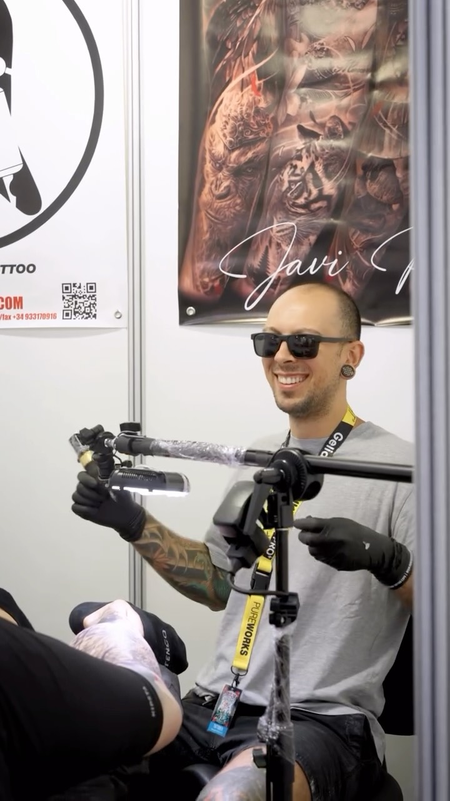

Precisión, luz y oficio. Cada sesión es una pieza pensada para la piel que la lleva.

Especializado en realismo en blanco y negro, retratos de anime y composiciones de estilo oriental. Cada pieza se diseña a medida, pensando en la anatomía y en la historia que el cliente quiere llevar en la piel.
Trabajo con cita previa en Barcelona, con materiales de un solo uso y protocolos de higiene estrictos.